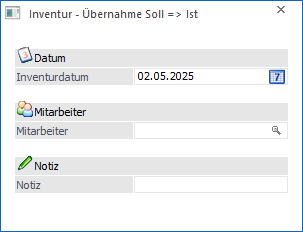

Um die Datensätze der Inventurerfassung mit einem editierbaren Erfassungsvorschlag zu versehen, benötigt die WinLine entsprechende Vorgaben. Diese können im Fenster "Inventur - Übernahme Soll => Ist" hinterlegt werden.

Ø Inventurdatum
Das hier hinterlegte Datum wird zur Ermittlung der Sollstände verwendet und als Inventurdatum in die Erfassungstabelle übertragen.
Ø Mitarbeiter
Der hier eingetragene Mitarbeiter wird in alle Erfassungszeilen der Inventur übernommen.
Ø Notiz
Sollen alle Datensätze der Inventurerfassung mit einer gleichlautenden Notiz versehen werden, so kann hier eine Hinterlegung erfolgen.
Button

Ø Ok
Durch Drücken des Buttons "Ok" bzw. der Taste F5 werden die Sollstände ermittelt und mit allen weiteren Vorgaben in die Inventurerfassung übernommen.
Ø Ende
Bei Anwahl des Buttons "Ende" bzw. der Taste ESC wird das Fenster geschlossen.